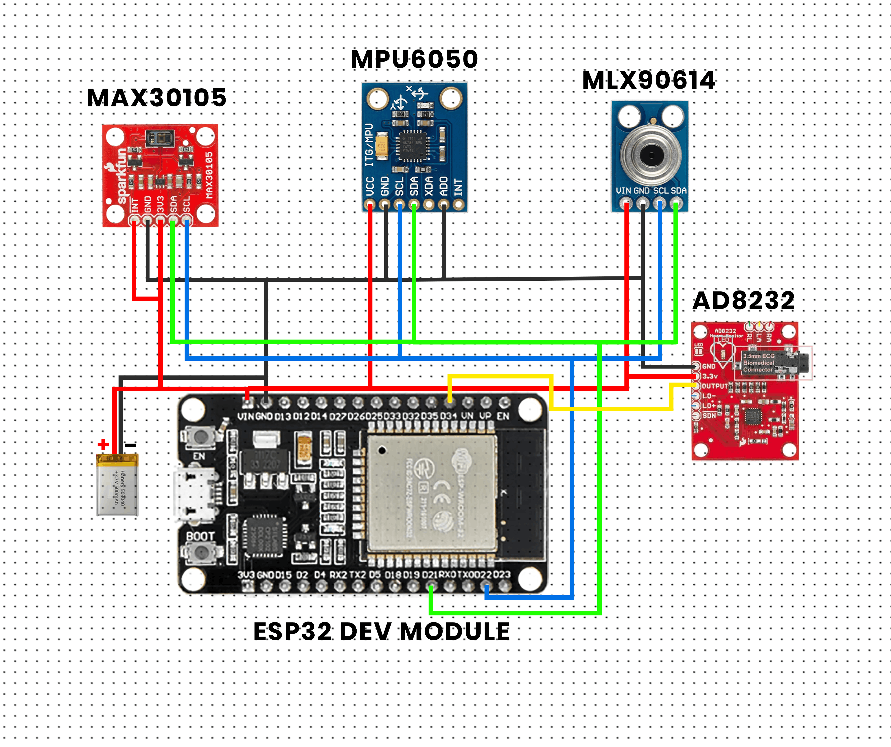
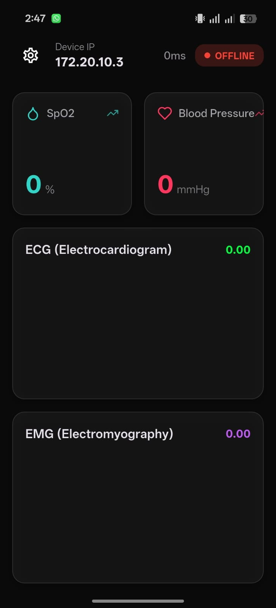
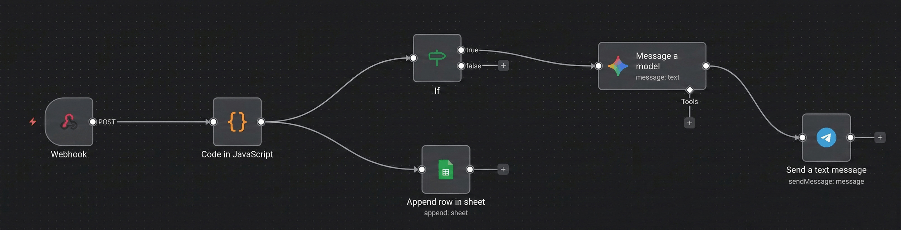
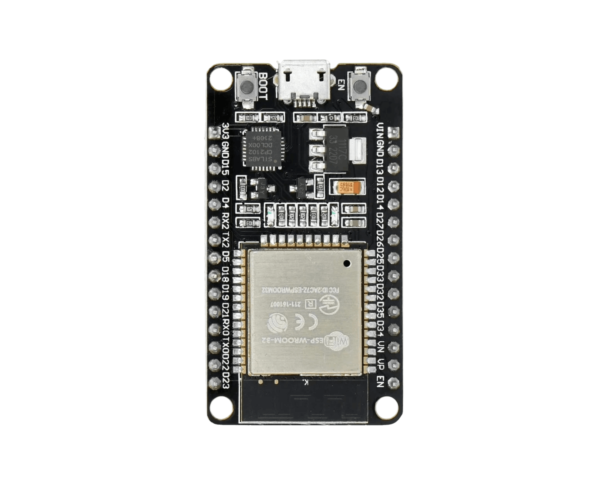
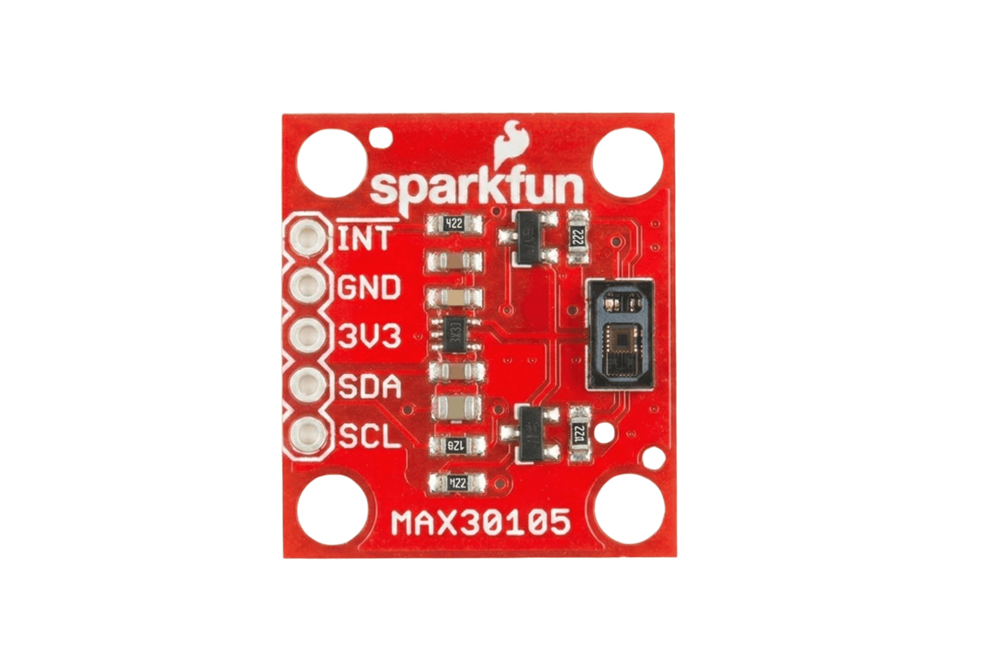
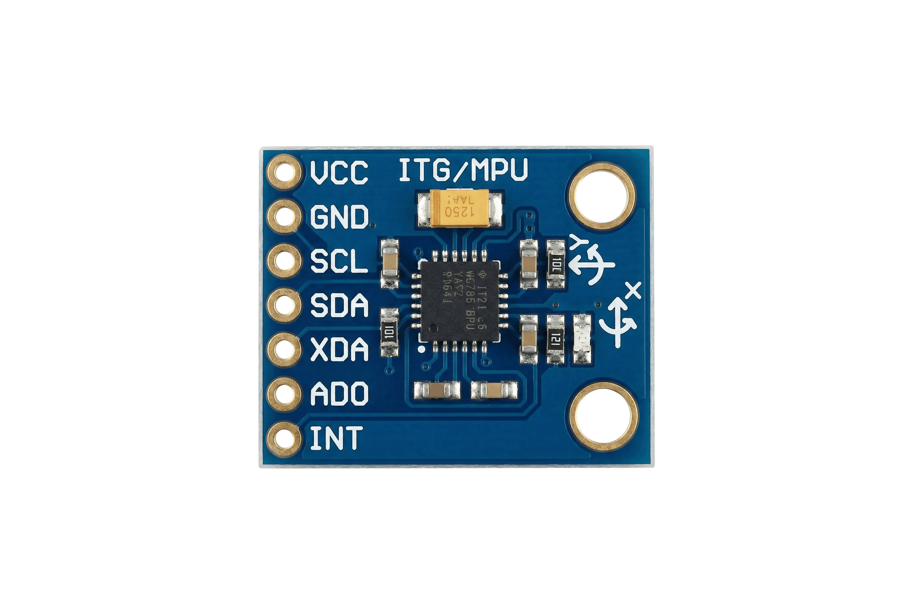
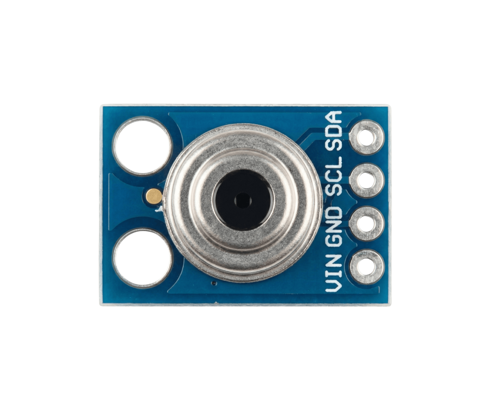
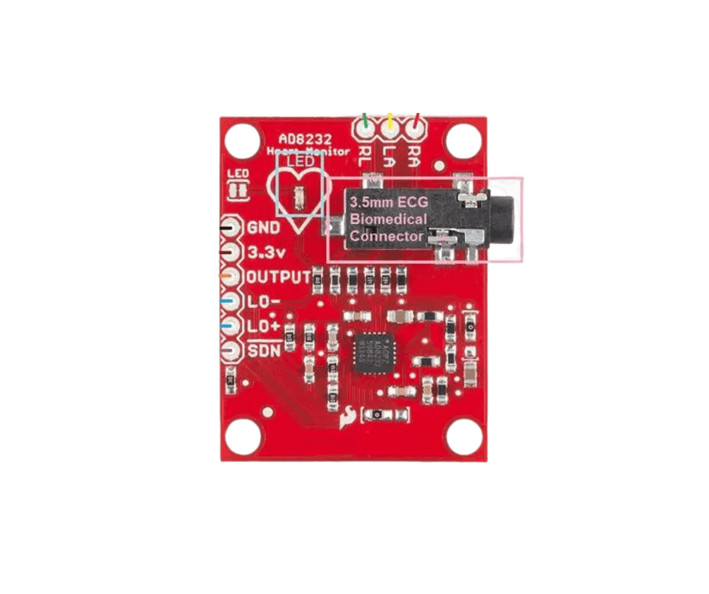

Total Care, Zero Worry: Your Patient is Safe in Our Hands.
In the realm of healthcare, we bridge the gap for those who cannot articulate their pain, acting as a digital voice and a 24/7 guardian.
Instant vitals processing via ESP32.
Encrypted health data for patient privacy.
Dedicated mobile interface for caregivers.
This innovative wearable device is designed to provide continuous, real-time health monitoring for elderly individuals and patients with limited mobility. By integrating advanced IoT technology with precision medical sensors, our system ensures that vital signs are constantly tracked, providing peace of mind for both patients and caregivers.
Monitors Heart Rate (BPM) and Blood Oxygen Saturation (SpO2) levels using the MAX30105 high-sensitivity pulse oximeter.
Utilizes a calibrated thermistor and the Steinhart-Hart equation to provide accurate body temperature readings.
Powered by the MPU6050 accelerometer, the device can instantly detect falls or abnormal shaking, triggering alerts.
Features a built-in web server that allows caregivers to view the patient’s health status from any connected device.
The system is built on the ESP32 microcontroller, utilizing its dual-core capabilities to handle sensor data processing while simultaneously hosting a Web Server.
Heart Rate & SpO2: Processes IR and Red light absorption to calculate heartbeats and oxygen levels reliably.
Motion & Fall Detection: Calculates the Net Acceleration Vector √(x²+y²+z²) to distinguish critical events.
To ensure medical-grade accuracy, the temperature is calculated using the Steinhart-Hart Equation:
This product acts as a "voice" for those who cannot express their physical distress. By automating the monitoring process, we reduce the risk of human error and ensure that help is dispatched the moment a medical anomaly or a fall occurs.

#include <Wire.h>
#include <WiFi.h>
#include <WebServer.h>
#include <HTTPClient.h>
#include <Adafruit_MPU6050.h>
#include <Adafruit_Sensor.h>
#include "MAX30105.h"
#include "heartRate.h"
#include <ESPmDNS.h>
// --- Configuration ---
const char* ssid = "Ahmed's Galaxy A12";
const char* password = "1234567@";
// mDNS names must be ASCII only, no spaces!
const char* mdnsName = "patient-monitor";
const char* n8n_webhook = "http://10.231.42.53:5678/webhook-test/sensor-data";
#define THERMISTOR_PIN 34
#define SERIES_RESISTOR 10000
#define NOMINAL_RESISTANCE 10000
#define B_COEFFICIENT 3950
#define ADC_MAX 4095
// --- Global Objects ---
WebServer server(80);
Adafruit_MPU6050 mpu;
MAX30105 particleSensor;
// --- Vitals Variables ---
float bodyTemp = 0;
String motion = "Stable";
int beatAvg = 0;
int approxSpO2 = 0;
long lastBeat = 0;
const byte RATE_SIZE = 4;
byte rates[RATE_SIZE];
byte rateSpot = 0;
unsigned long lastPostTime = 0;
const long postInterval = 2000; // Send to n8n every 2 seconds
// --- Web Page HTML ---
void handleRoot() {
String html = "<html><head><meta http-equiv='refresh' content='1'></head>";
html += "<body style='font-family:sans-serif; text-align:center; background:#f4f4f4;'>";
html += "<h1>Live Patient Monitor</h1>";
html += "<div style='font-size:1.5em; border:2px solid #333; display:inline-block; padding:20px; background:white; border-radius:10px;'>";
// IP and mDNS Info
html += "<p><b>IP Address:</b> " + WiFi.localIP().toString() + "</p>";
html += "<p><b>URL:</b> <a href='http://" + String(mdnsName) + ".local'>http://" + String(mdnsName) + ".local</a></p>";
html += "<hr>";
html += "<p><b>Movement:</b> " + motion + "</p>";
html += "<p><b>Temperature:</b> " + String(bodyTemp, 1) + " C</p>";
html += "<p><b>Heart Rate:</b> " + String(beatAvg) + " BPM</p>";
html += "<p><b>SpO2:</b> " + String(approxSpO2) + "%</p>";
html += "</div></body></html>";
server.send(200, "text/html", html);
}
void setup() {
Serial.begin(115200);
Wire.begin(21, 22);
// Connect Wi-Fi
WiFi.begin(ssid, password);
Serial.print("Connecting to WiFi");
while (WiFi.status() != WL_CONNECTED) {
delay(500);
Serial.print(".");
}
Serial.println("\nWiFi Connected!");
Serial.print("IP Address: "); Serial.println(WiFi.localIP());
// 2. START MDNS
if (!MDNS.begin(mdnsName)) {
Serial.println("Error setting up MDNS responder!");
} else {
Serial.println("mDNS responder started");
Serial.print("Access at: http://");
Serial.print(mdnsName);
Serial.println(".local");
}
// Init Sensors
if (!mpu.begin()) Serial.println("MPU Error");
if (!particleSensor.begin(Wire, I2C_SPEED_STANDARD)) Serial.println("MAX Error");
particleSensor.setup(60, 4, 2, 100, 411, 4096);
// Setup Web Server
server.on("/", handleRoot);
server.begin();
Serial.println("Web server started");
}
void loop() {
server.handleClient(); // Keep the web server running
// 1. TEMPERATURE
int analogValue = analogRead(THERMISTOR_PIN);
if(analogValue > 0) {
float resistance = SERIES_RESISTOR / ((ADC_MAX / (float)analogValue) - 1);
float steinhart = log(resistance / NOMINAL_RESISTANCE) / B_COEFFICIENT;
steinhart += 1.0 / (25 + 273.15);
bodyTemp = (1.0 / steinhart) - 273.15;
}
// 2. MOVEMENT
sensors_event_t a, g, t;
mpu.getEvent(&a, &g, &t);
float netAcc = sqrt(sq(a.acceleration.x) + sq(a.acceleration.y) + sq(a.acceleration.z));
if (netAcc > 25.0) motion = "FALL DETECTED!";
else if (netAcc > 16.0) motion = "Abnormal Shaking";
else if (netAcc > 12.5 || netAcc < 7.5) motion = "Moving";
else motion = "Stable";
// 3. VITALS (MAX30102/5)
long irValue = particleSensor.getIR();
if (irValue > 50000) {
if (checkForBeat(irValue)) {
long delta = millis() - lastBeat;
lastBeat = millis();
float bpm = 60 / (delta / 1000.0);
if (bpm < 255 && bpm > 20) {
rates[rateSpot++] = (byte)bpm;
rateSpot %= RATE_SIZE;
beatAvg = 0;
for (byte x = 0; x < RATE_SIZE; x++) beatAvg += rates[x];
beatAvg /= RATE_SIZE;
}
}
approxSpO2 = 104 - (17 * ((float)particleSensor.getRed() / irValue));
if (approxSpO2 > 100) approxSpO2 = 100;
} else {
beatAvg = 0; approxSpO2 = 0;
}
// 4. SEND DATA TO N8N
if (millis() - lastPostTime > postInterval) {
if (WiFi.status() == WL_CONNECTED) {
HTTPClient http;
http.begin(n8n_webhook);
http.addHeader("Content-Type", "application/json");
String jsonPayload = "{";
jsonPayload += "\"temp_obj\":" + String(bodyTemp) + ",";
jsonPayload += "\"acc_x\":" + String(a.acceleration.x) + ",";
jsonPayload += "\"acc_y\":" + String(a.acceleration.y) + ",";
jsonPayload += "\"acc_z\":" + String(a.acceleration.z) + ",";
jsonPayload += "\"heart_rate\":" + String(beatAvg) + ",";
jsonPayload += "\"spo2\":" + String(approxSpO2);
jsonPayload += "}";
int httpResponseCode = http.POST(jsonPayload);
Serial.print("n8n HTTP Response: ");
Serial.println(httpResponseCode);
http.end();
}
lastPostTime = millis();
}
}

Our dedicated mobile application acts as a real-time dashboard for caregivers, displaying all critical sensor readings in one centralized, easy-to-read interface.
Continuously updates and displays Heart Rate, SpO2, and Body Temperature directly from the hardware sensors.
Shows the current physical state of the patient, instantly updating if a fall or abnormal movement is detected.
Receives wireless telemetry data effortlessly, ensuring caregivers are always informed without delay.
How we process the ESP32 data in the cloud, log it for history, and trigger instant AI-powered emergency alerts.

The ESP32 sends real-time sensor data to an Webhook. The data is parsed using JavaScript and simultaneously appended to a Google Sheet to maintain a complete historical health record.
An If condition continuously monitors the incoming vitals. If an emergency is detected (e.g., a fall), the data is routed to an AI Model to generate a contextual and clear emergency message.
The processed AI alert is instantly pushed to the caregiver's phone via Telegram, ensuring immediate action can be taken without checking the dashboard manually.
Choose to view real-time data directly on the web or download the Android App for 24/7 access.
The powerful hardware that makes our system reliable and efficient.
The core of our wearable system is the ESP32, a powerful microcontroller designed for the modern IoT era.
Features built-in Wi-Fi and Bluetooth, allowing for seamless real-time data transfer to the cloud or mobile apps.
Engineered for low power consumption, making it the ideal choice for wearable, battery-operated devices.
Offers faster processing speeds and more GPIO pins compared to traditional boards like the Arduino Uno.


To monitor the patient's cardiovascular health, we integrated the MAX30102 high-sensitivity pulse oximeter.
It measures both heart rate and blood oxygen saturation (SpO2) using advanced PPG technology.
Its ultra-compact size allows it to be integrated into clothing without causing discomfort to the user.
Provides high-precision readings especially when the user is in a resting state.
Safety is our priority, which is why we use the MPU6050 to track the patient’s physical activity.
Provides both acceleration and rotation data, detecting motion and tilt with high resolution.
Crucial for detecting sudden falls or abnormal movements, vital for disabled users.


For body temperature tracking, we chose the MLX90614 infrared thermometer for its clinical-grade performance.
Allows for non-contact measurement, meaning it can read temperature accurately even through thin clothing.
Delivers fast and highly accurate responses to thermal changes.
To provide a comprehensive cardiovascular analysis, we integrated the AD8232 heart rate monitor, which acts as a single-lead ECG.
Measures the actual electrical activity of the heart, providing an Electrocardiogram (ECG) signal.
Designed to extract, amplify, and filter small bio-potential signals even in noisy environments.
Crucial for detecting irregular heart rhythms (Arrhythmias) and providing deeper clinical insights in real-time.
